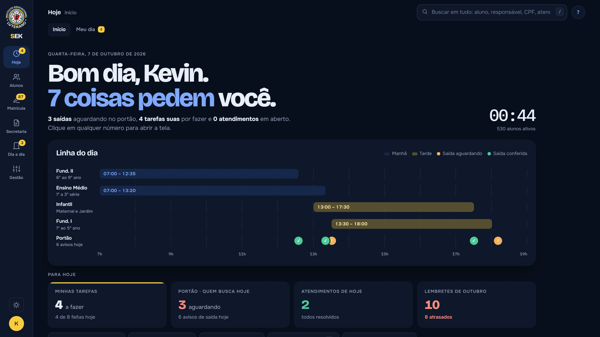
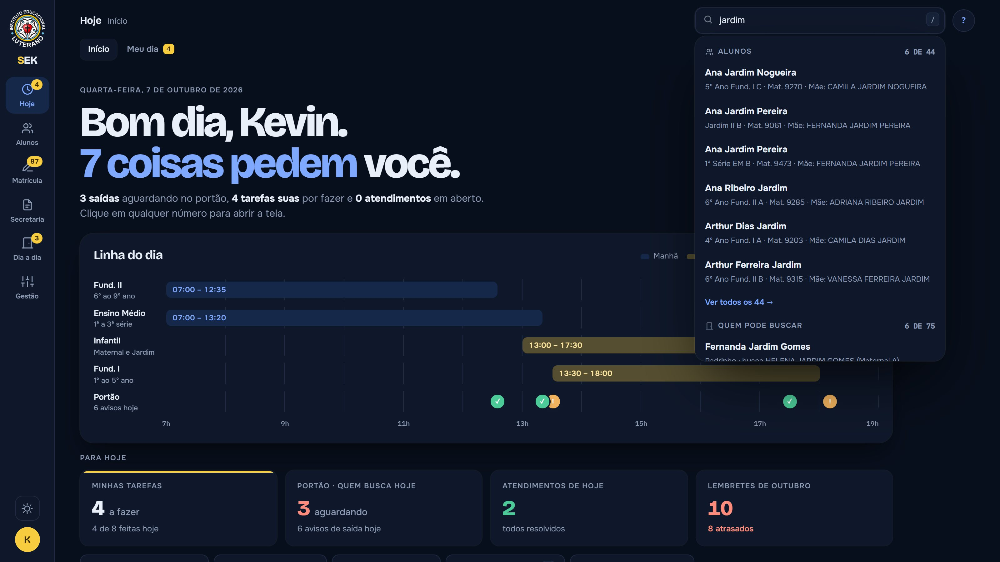
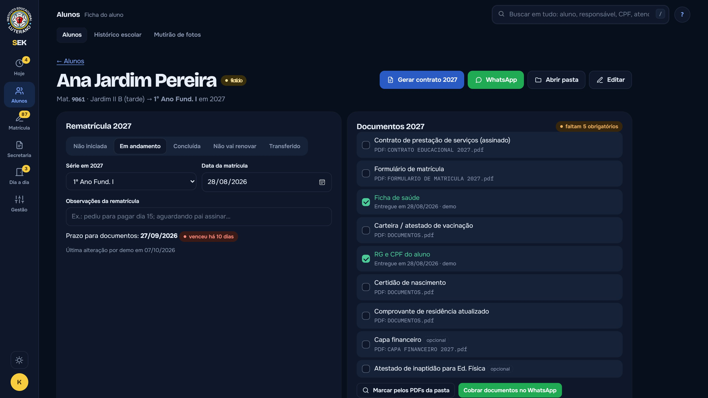
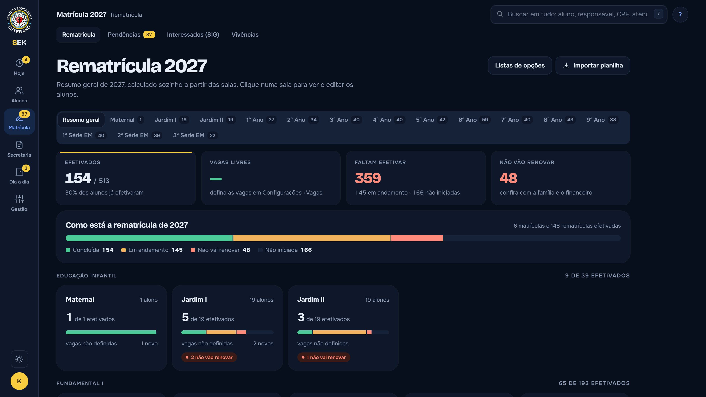
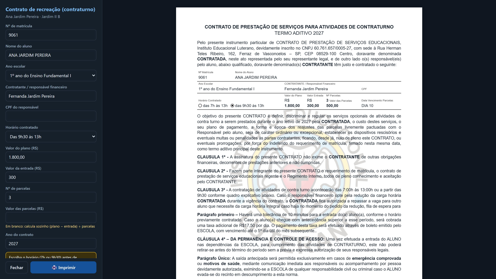
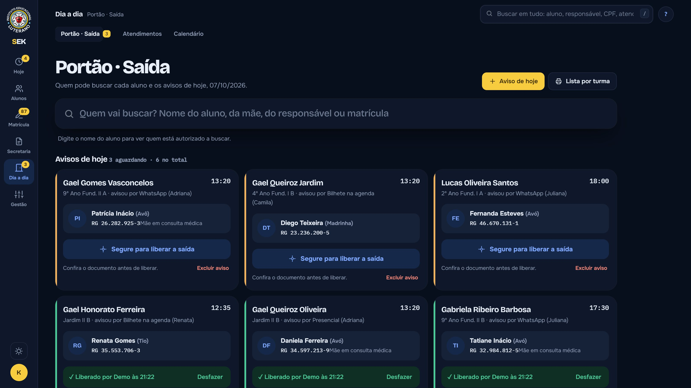
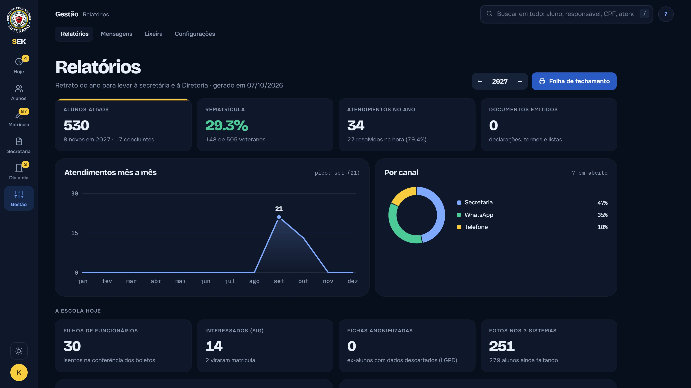

Início que mostra o que importa hoje
Saídas aguardando no portão, tarefas, atendimentos e lembretes, tudo contado e clicável. A "linha do dia" mostra os horários de cada segmento e os avisos do portão.
O SEK é um sistema web que criei do zero, como jovem aprendiz, para a secretaria da escola onde trabalho. Ele junta o que antes ficava espalhado em papel, planilhas e anotações.
Nada de recurso por enfeite: cada parte do SEK substitui uma planilha, um caderno ou um vai e vem que existia no dia a dia.

Saídas aguardando no portão, tarefas, atendimentos e lembretes, tudo contado e clicável. A "linha do dia" mostra os horários de cada segmento e os avisos do portão.

Aluno, responsável, CPF ou atendimento em segundos. A tecla / leva direto para a busca.

Rematrícula, documentos entregues, contatos, quem pode buscar, fotos e histórico num lugar só.

O resumo geral se calcula sozinho, sala por sala: quem já efetivou, quem falta e quem não vai renovar.

Declarações, termos, contratos e histórico escolar com os dados do aluno já no lugar, no mesmo modelo que a escola usa. É só conferir e imprimir.

Quem pode buscar cada aluno, com documento. Para liberar, é preciso segurar o botão até a barra encher, e fica registrado quem conferiu e a que horas.

Atendimentos mês a mês, canais, matrículas e o relatório de fechamento pronto para levar à direção.
Servidor próprio, sem frameworks, rodando num computador da secretaria e acessado pelos outros pelo navegador.
Banco de dados em um arquivo só, fácil de copiar, com backup cifrado e restauração.
Interface feita à mão: tema claro e escuro, animações curtas e atalhos de teclado.
Senhas protegidas, sessões com bloqueio de tela, aviso quando duas pessoas editam a mesma ficha.
Dados de menores tratados com cuidado: lixeira de 30 dias, registro de quem fez o quê e descarte previsto.
Lê planilhas e boletins dos sistemas que a escola já usa, para ninguém digitar duas vezes.
O que mais aprendi: ouvir quem usa no dia a dia.
Sou jovem aprendiz na secretaria de uma escola. Em vez de só aprender a rotina, resolvi construir uma ferramenta para ela. O que começou como protótipo hoje já está em produção na instituição e, ainda na fase de testes finais, recebeu um retorno extremamente positivo.
Menos papel. Menos planilha. Mais tempo para as pessoas.